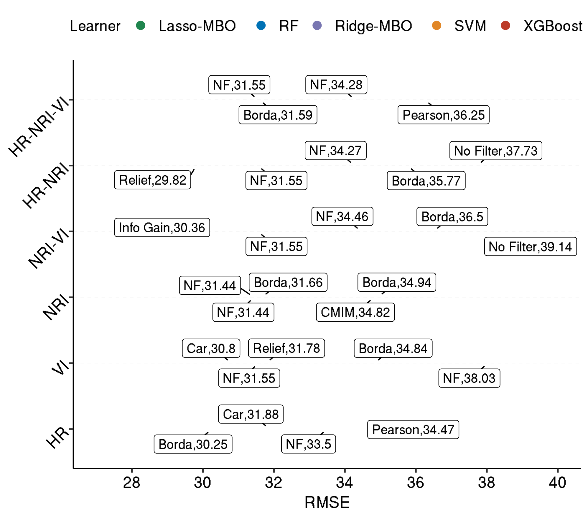
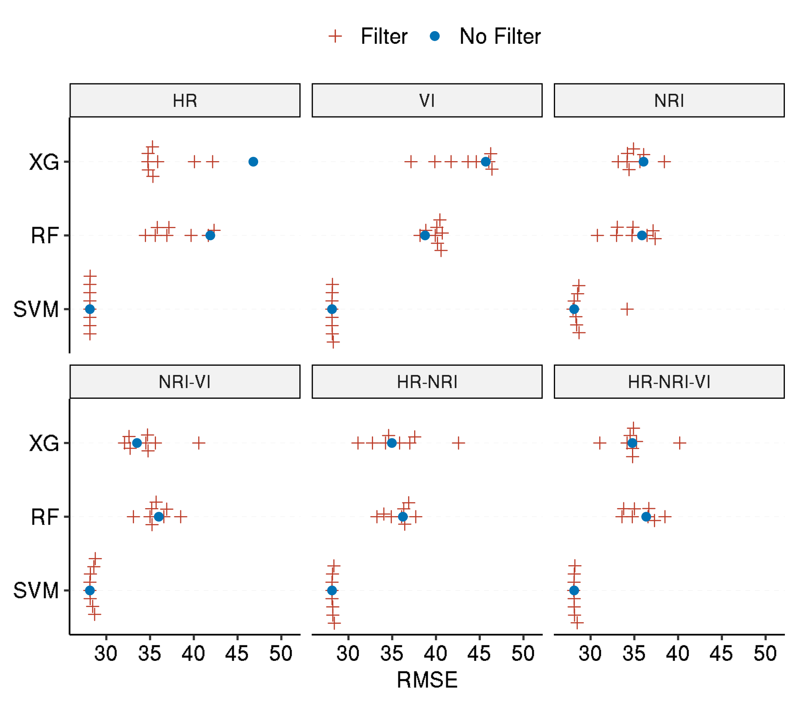
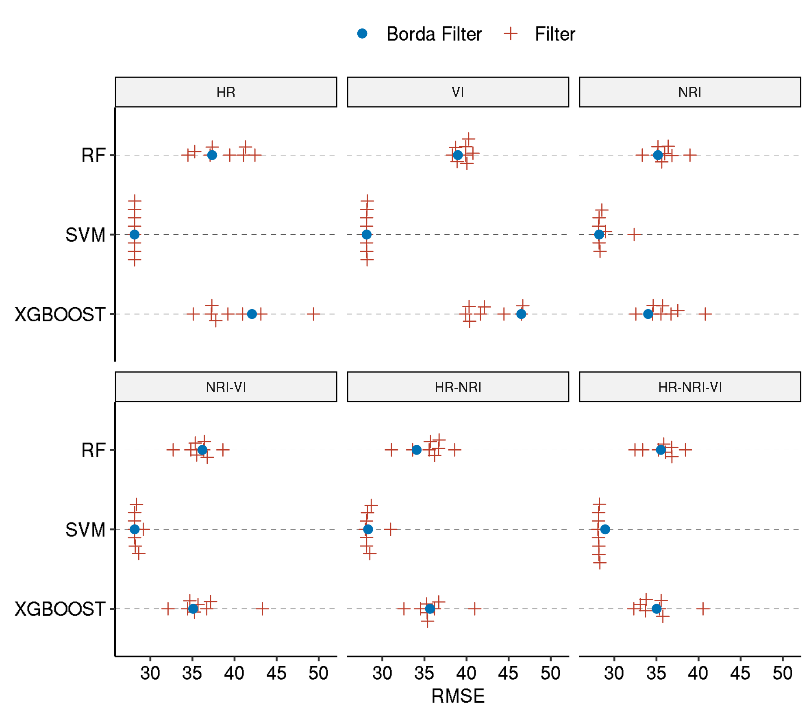

Last updated: 2021-06-11
Checks: 7 0
Knit directory: 2019-feature-selection/
This reproducible R Markdown analysis was created with workflowr (version 1.6.2). The Checks tab describes the reproducibility checks that were applied when the results were created. The Past versions tab lists the development history.
Great! Since the R Markdown file has been committed to the Git repository, you know the exact version of the code that produced these results.
Great job! The global environment was empty. Objects defined in the global environment can affect the analysis in your R Markdown file in unknown ways. For reproduciblity it’s best to always run the code in an empty environment.
The command set.seed(20190522) was run prior to running the code in the R Markdown file. Setting a seed ensures that any results that rely on randomness, e.g. subsampling or permutations, are reproducible.
Great job! Recording the operating system, R version, and package versions is critical for reproducibility.
Nice! There were no cached chunks for this analysis, so you can be confident that you successfully produced the results during this run.
Great job! Using relative paths to the files within your workflowr project makes it easier to run your code on other machines.
Great! You are using Git for version control. Tracking code development and connecting the code version to the results is critical for reproducibility.
The results in this page were generated with repository version 3f9cb9a. See the Past versions tab to see a history of the changes made to the R Markdown and HTML files.
Note that you need to be careful to ensure that all relevant files for the analysis have been committed to Git prior to generating the results (you can use wflow_publish or wflow_git_commit). workflowr only checks the R Markdown file, but you know if there are other scripts or data files that it depends on. Below is the status of the Git repository when the results were generated:
Ignored files:
Ignored: .Rhistory
Ignored: .Rproj.user/
Ignored: .Ruserdata/
Ignored: .drake/
Ignored: .vscode/
Ignored: analysis/rosm.cache/
Ignored: data/
Ignored: inst/Benchmark for Filter Methods for Feature Selection in High-Dimensional Classification Data.pdf
Ignored: inst/study-area-map/._study-area.qgs
Ignored: inst/study-area-map/study-area.qgs~
Ignored: log/
Ignored: renv/library/
Ignored: renv/local/
Ignored: renv/staging/
Ignored: reviews/
Ignored: rosm.cache/
Untracked files:
Untracked: loca_job.R
Unstaged changes:
Modified: _drake.R
Note that any generated files, e.g. HTML, png, CSS, etc., are not included in this status report because it is ok for generated content to have uncommitted changes.
These are the previous versions of the repository in which changes were made to the R Markdown (analysis/eval-performance.Rmd) and HTML (docs/eval-performance.html) files. If you’ve configured a remote Git repository (see ?wflow_git_remote), click on the hyperlinks in the table below to view the files as they were in that past version.
| File | Version | Author | Date | Message |
|---|---|---|---|---|
| Rmd | 3f9cb9a | pat-s | 2021-06-11 | wflow_publish(knitr_in(“analysis/eval-performance.Rmd”), view = FALSE, |
| html | a2ae523 | pat-s | 2021-04-29 | Build site. |
| Rmd | efbf354 | pat-s | 2021-04-29 | wflow_publish(knitr_in(“analysis/eval-performance.Rmd”), view = FALSE, |
| html | 1683d67 | pat-s | 2021-04-12 | Build site. |
| Rmd | 48579a4 | pat-s | 2021-04-12 | wflow_publish(knitr_in(“analysis/eval-performance.Rmd”), view = FALSE, |
| html | 91429d5 | pat-s | 2021-04-10 | Build site. |
| Rmd | c7bcae0 | pat-s | 2021-04-10 | wflow_publish(knitr_in(“analysis/eval-performance.Rmd”), view = FALSE, |
| html | 759a0d6 | pat-s | 2021-04-09 | Build site. |
| Rmd | fd1b47e | pat-s | 2021-04-09 | wflow_publish(knitr_in(“analysis/eval-performance.Rmd”), view = FALSE, |
| html | 6bec2b4 | pat-s | 2021-04-09 | Build site. |
| Rmd | 2b8414c | pat-s | 2021-04-09 | fix beeswarm plots |
| html | d63a11c | pat-s | 2021-04-06 | Build site. |
| Rmd | 7cc26f7 | pat-s | 2021-03-29 | wflow_publish(knitr_in(“analysis/eval-performance.Rmd”), view = FALSE, |
| html | 67007fc | pat-s | 2021-03-29 | Build site. |
| Rmd | 85bffd2 | pat-s | 2021-03-29 | wflow_publish(knitr_in(“analysis/eval-performance.Rmd”), view = FALSE, |
| html | 0bb65fb | pat-s | 2021-03-29 | Build site. |
| Rmd | 4bebb61 | pat-s | 2021-03-29 | wflow_publish(knitr_in(“analysis/eval-performance.Rmd”), view = FALSE, |
| Rmd | 7e19df7 | pat-s | 2021-03-07 | fix plot order in eval-performance |
| html | b2ac43b | pat-s | 2021-02-20 | Build site. |
| html | a953299 | pat-s | 2020-08-12 | Build site. |
| html | 8b5e422 | pat-s | 2020-08-05 | Build site. |
| html | 6f88553 | pat-s | 2020-06-21 | Build site. |
| Rmd | c94e7fc | pat-s | 2020-06-21 | wflow_publish(knitr_in(“analysis/eval-performance.Rmd”), view = FALSE, |
| html | 9a54378 | pat-s | 2020-05-29 | Build site. |
| Rmd | 679a87a | pat-s | 2020-05-29 | wflow_publish(knitr_in(“analysis/eval-performance.Rmd”), view = FALSE, |
| html | 6eeb69b | pat-s | 2020-05-06 | Build site. |
| Rmd | fc28c0f | pat-s | 2020-05-06 | wflow_publish(knitr_in(“analysis/eval-performance.Rmd”), view = FALSE, |
| html | a2a6562 | pat-s | 2020-05-03 | Build site. |
| Rmd | b9d07a0 | pat-s | 2020-05-03 | wflow_publish(knitr_in(“analysis/eval-performance.Rmd”), view = FALSE, |
| html | f7737ce | pat-s | 2020-04-30 | Build site. |
| Rmd | 576a62f | pat-s | 2020-04-30 | wflow_publish(knitr_in(“analysis/eval-performance.Rmd”), view = FALSE, |
| html | fcabe1a | pat-s | 2020-04-30 | Build site. |
| Rmd | 3aa1860 | pat-s | 2020-04-30 | wflow_publish(knitr_in(“analysis/eval-performance.Rmd”), view = FALSE, |
| html | bf3eee4 | pat-s | 2020-04-30 | Build site. |
| Rmd | 3a4a1ae | pat-s | 2020-04-30 | wflow_publish(knitr_in(“analysis/eval-performance.Rmd”), view = FALSE, |
| html | ebf4147 | pat-s | 2020-04-30 | Build site. |
| Rmd | 96f47c3 | pat-s | 2020-04-30 | wflow_publish(knitr_in(“analysis/eval-performance.Rmd”), view = FALSE, |
| html | 1c1c5f4 | pat-s | 2020-04-30 | Build site. |
| Rmd | b1d64ea | pat-s | 2020-04-30 | wflow_publish(knitr_in(“analysis/eval-performance.Rmd”), view = FALSE, |
| html | 9ea0dff | pat-s | 2020-04-29 | Build site. |
| Rmd | ba54b0d | pat-s | 2020-04-29 | wflow_publish(knitr_in(“analysis/eval-performance.Rmd”), view = FALSE, |
| html | 3bdb92f | pat-s | 2020-04-29 | Build site. |
| Rmd | 1b98cdd | pat-s | 2020-04-29 | wflow_publish(knitr_in(“analysis/eval-performance.Rmd”), view = FALSE, |
| html | 01b8c74 | pat-s | 2020-04-29 | Build site. |
| Rmd | c79c23d | pat-s | 2020-04-29 | wflow_publish(knitr_in(“analysis/eval-performance.Rmd”), view = FALSE, |
| html | e20d376 | pat-s | 2020-04-29 | Build site. |
| Rmd | 4c8c633 | pat-s | 2020-04-29 | wflow_publish(knitr_in(“analysis/eval-performance.Rmd”), view = FALSE, |
| html | 72c4b82 | pat-s | 2020-04-19 | Build site. |
| html | 89adb44 | pat-s | 2020-04-18 | Build site. |
| Rmd | 6b863d0 | pat-s | 2020-04-18 | wflow_publish(knitr_in(“analysis/eval-performance.Rmd”), view = FALSE, |
| html | 07fb043 | pat-s | 2020-04-18 | Build site. |
| Rmd | abc2b51 | pat-s | 2020-04-18 | wflow_publish(knitr_in(“analysis/eval-performance.Rmd”), view = FALSE, |
| html | e670acc | pat-s | 2020-04-18 | Build site. |
| Rmd | 1fc0c78 | pat-s | 2020-04-18 | wflow_publish(knitr_in(“analysis/eval-performance.Rmd”), view = FALSE, |
| html | 1d1bee4 | pat-s | 2020-04-18 | Build site. |
| Rmd | f3103fc | pat-s | 2020-04-18 | wflow_publish(knitr_in(“analysis/eval-performance.Rmd”), view = FALSE, |
| html | 4982c76 | pat-s | 2020-04-18 | Build site. |
| Rmd | b4fda43 | pat-s | 2020-04-18 | wflow_publish(knitr_in(“analysis/eval-performance.Rmd”), view = FALSE, |
| html | 6c42b7c | pat-s | 2020-04-18 | Build site. |
| Rmd | 8c30483 | pat-s | 2020-04-18 | wflow_publish(knitr_in(“analysis/eval-performance.Rmd”), view = FALSE, |
| html | 544e288 | pat-s | 2020-04-12 | Build site. |
| Rmd | ce72956 | pat-s | 2020-04-12 | wflow_publish(knitr_in(“analysis/eval-performance.Rmd”), view = FALSE, |
| html | 6bded83 | pat-s | 2020-03-05 | Build site. |
| Rmd | 21453cb | pat-s | 2020-03-05 | wflow_publish(knitr_in(“analysis/eval-performance.Rmd”), view = FALSE, |
| html | f59d02a | pat-s | 2020-03-05 | Build site. |
| Rmd | 167fdbc | pat-s | 2020-03-05 | wflow_publish(knitr_in(“analysis/eval-performance.Rmd”), view = FALSE, |
| html | 2ee982d | pat-s | 2020-03-05 | Build site. |
| Rmd | d487d51 | pat-s | 2020-03-05 | wflow_publish(knitr_in(“analysis/eval-performance.Rmd”), view = FALSE, |
| html | 776b35f | pat-s | 2020-03-03 | Build site. |
| Rmd | d0c645a | pat-s | 2020-03-03 | wflow_publish(knitr_in(“analysis/eval-performance.Rmd”), view = FALSE, |
| html | 274a918 | pat-s | 2020-02-25 | Build site. |
| Rmd | 2e632e1 | pat-s | 2020-02-25 | wflow_publish(knitr_in(“analysis/eval-performance.Rmd”), view = FALSE, |
| Rmd | a53ea68 | pat-s | 2020-02-24 | add prefixes to plots and tables |
| Rmd | 379bd5d | pat-s | 2020-02-24 | wflow_publish(knitr_in(“analysis/eval-performance.Rmd”), view = FALSE, |
| html | f680221 | pat-s | 2020-01-15 | Build site. |
| html | b25e779 | pat-s | 2020-01-10 | Build site. |
| Rmd | db0baaa | pat-s | 2020-01-10 | wflow_publish(knitr_in(“analysis/eval-performance.Rmd”), view = FALSE, |
| html | 7f9507f | pat-s | 2019-12-10 | Build site. |
| Rmd | 951e98c | pat-s | 2019-12-10 | wflow_publish(knitr_in(“analysis/eval-performance.Rmd”), view = FALSE, verbose = |
| Rmd | b27c623 | pat-s | 2019-12-09 | Standard Error -> SE |
| Rmd | 559a59d | pat-s | 2019-12-09 | add scatterplots to vis BM perf |
| html | 482a158 | pat-s | 2019-11-01 | Build site. |
| html | becf5ea | pat-s | 2019-11-01 | Build site. |
| html | bd7c7f5 | pat-s | 2019-10-31 | Build site. |
| html | 62ff96f | pat-s | 2019-10-07 | Build site. |
| html | a947654 | pat-s | 2019-10-02 | Build site. |
| html | 49da171 | pat-s | 2019-09-22 | Build site. |
| html | c6317a8 | pat-s | 2019-09-19 | Build site. |
| Rmd | d7c72a8 | pat-s | 2019-09-19 | wflow_publish(knitr_in(“analysis/eval-performance.Rmd”), view = FALSE, |
| html | 7fd40ca | pat-s | 2019-09-18 | Build site. |
| Rmd | 44ff84b | pat-s | 2019-09-18 | wflow_publish(knitr_in(“analysis/eval-performance.Rmd”), view = FALSE, |
| html | 41aae14 | pat-s | 2019-09-12 | Build site. |
| html | ff340b8 | pat-s | 2019-09-03 | Build site. |
| Rmd | a524819 | pat-s | 2019-09-03 | wflow_publish(knitr_in(“analysis/eval-performance.Rmd”), view = FALSE, |
| html | b181c52 | pat-s | 2019-09-02 | Build site. |
| Rmd | cf6e820 | pat-s | 2019-09-02 | wflow_publish(“analysis/eval-performance.Rmd”) |
| Rmd | 1bec10d | pat-s | 2019-09-01 | no timestamps in latex tables |
| html | 4e363ac | pat-s | 2019-09-01 | Build site. |
| Rmd | 518d0cb | pat-s | 2019-09-01 | style files using tidyverse style |
| html | 8e7e4fe | pat-s | 2019-09-01 | Build site. |
| Rmd | 8941bca | pat-s | 2019-09-01 | wflow_publish(knitr_in(“analysis/eval-performance.Rmd”), view = FALSE, |
| Rmd | 297ed93 | pat-s | 2019-08-31 | add filter vs no filter comparison plot |
| html | 7582c67 | pat-s | 2019-08-31 | Build site. |
| html | abd531f | pat-s | 2019-08-31 | Build site. |
| Rmd | 9117eee | pat-s | 2019-08-31 | wflow_publish(knitr_in(“analysis/eval-performance.Rmd”), view = FALSE, |
| Rmd | 5b629cb | pat-s | 2019-08-19 | add new tasks to performance eval report |
| html | 1ec8768 | pat-s | 2019-08-17 | Build site. |
| html | df85aba | pat-s | 2019-07-12 | Build site. |
| html | 3a44a95 | pat-s | 2019-07-10 | Build site. |
| html | c238ce4 | pat-s | 2019-07-10 | Build site. |
| Rmd | e98cb01 | pat-s | 2019-07-10 | wflow_publish(knitr_in(“analysis/eval-performance.Rmd”), view = FALSE, |
| Rmd | 24e318f | pat-s | 2019-07-01 | update reports |
| Rmd | ca5c5bc | pat-s | 2019-06-28 | add eval-performance report |
Last update:
[1] "Fri Jun 11 11:06:41 2021"Fold performances of “SVM MBO No Filter” on the HR Task
Overall leaderboard across all settings, sorted ascending by performance.
Learners: On which task and using which filter did every learner score their best result on?
*CV: L2 penalized regression using the internal 10-fold CV tuning of the glmnet package
*MBO: L2 penalized regression using using MBO for hyperparameter optimization.
Overall leaderboard across all settings, sorted descending by performance.

| Version | Author | Date |
|---|---|---|
| d63a11c | pat-s | 2021-04-06 |
| 0bb65fb | pat-s | 2021-03-29 |
| b2ac43b | pat-s | 2021-02-20 |
| e20d376 | pat-s | 2020-04-29 |
| 07fb043 | pat-s | 2020-04-18 |
| 1d1bee4 | pat-s | 2020-04-18 |
| 6c42b7c | pat-s | 2020-04-18 |
| 544e288 | pat-s | 2020-04-12 |
| f59d02a | pat-s | 2020-03-05 |
| 2ee982d | pat-s | 2020-03-05 |
| 274a918 | pat-s | 2020-02-25 |
| b25e779 | pat-s | 2020-01-10 |
| 7f9507f | pat-s | 2019-12-10 |
| 482a158 | pat-s | 2019-11-01 |
| becf5ea | pat-s | 2019-11-01 |
| bd7c7f5 | pat-s | 2019-10-31 |
| 62ff96f | pat-s | 2019-10-07 |
| a947654 | pat-s | 2019-10-02 |
| 49da171 | pat-s | 2019-09-22 |
| 41aae14 | pat-s | 2019-09-12 |
| b181c52 | pat-s | 2019-09-02 |
| 8e7e4fe | pat-s | 2019-09-01 |
| 7582c67 | pat-s | 2019-08-31 |
| abd531f | pat-s | 2019-08-31 |
Showing the final effect of applying feature selection to a learner for each task. All filters are colored in the same way whereas using “no filter” appears in a different color.

| Version | Author | Date |
|---|---|---|
| d63a11c | pat-s | 2021-04-06 |
| 0bb65fb | pat-s | 2021-03-29 |
| b2ac43b | pat-s | 2021-02-20 |
| e20d376 | pat-s | 2020-04-29 |
| 1d1bee4 | pat-s | 2020-04-18 |
| 6c42b7c | pat-s | 2020-04-18 |
| 544e288 | pat-s | 2020-04-12 |
| f59d02a | pat-s | 2020-03-05 |
| 2ee982d | pat-s | 2020-03-05 |
| 274a918 | pat-s | 2020-02-25 |
| b25e779 | pat-s | 2020-01-10 |
| 7f9507f | pat-s | 2019-12-10 |
Showing the final effect of applying feature selection to a learner for each task. All filters are summarized into a a single color whereas the “Borda” filter appears in its own color.

| Version | Author | Date |
|---|---|---|
| 6bec2b4 | pat-s | 2021-04-09 |
| d63a11c | pat-s | 2021-04-06 |
| 0bb65fb | pat-s | 2021-03-29 |
| b2ac43b | pat-s | 2021-02-20 |
| e20d376 | pat-s | 2020-04-29 |
| 1d1bee4 | pat-s | 2020-04-18 |
| 6c42b7c | pat-s | 2020-04-18 |
| 544e288 | pat-s | 2020-04-12 |
| f59d02a | pat-s | 2020-03-05 |
| 2ee982d | pat-s | 2020-03-05 |
| 776b35f | pat-s | 2020-03-03 |
| 274a918 | pat-s | 2020-02-25 |
| b25e779 | pat-s | 2020-01-10 |
| 7f9507f | pat-s | 2019-12-10 |
The model/task combinations which were selected relate to the best performance of the respective algorithm on the HR-NRI-VI task in the overall benchmark.
Fold IDs are different for each learner, i.e. a specific plot does not always resolve to “fold 1” for each learner. See bmr_inspect_tune[["results"]][["hr_nri_vi"]][["RF MBO Relief"]][["pred"]][["instance"]][["test.inds"]].
Thus, we need to manually label the fold IDs to plot names for each learner.
RF
Plot 1: Luiando Plot 2: Laukiz2 Plot 3: Laukiz 1 Plot 4: Oiartzun
SVM
Plot 1: Laukiz1 Plot 2: Oiartzun Plot 3: Luiando Plot 4: Laukiz2
XGBoost
Plot 1: Luiando Plot 2: Laukiz1 Plot 3: Oiartzun Plot 4: Laukiz2
Aggregated mean and standard deviation:
R version 4.0.4 (2021-02-15)
Platform: x86_64-pc-linux-gnu (64-bit)
Running under: Ubuntu 20.04.1 LTS
Matrix products: default
BLAS: /usr/lib/x86_64-linux-gnu/openblas-pthread/libblas.so.3
LAPACK: /usr/lib/x86_64-linux-gnu/openblas-pthread/liblapack.so.3
locale:
[1] LC_CTYPE=en_US.UTF-8 LC_NUMERIC=C
[3] LC_TIME=en_US.UTF-8 LC_COLLATE=en_US.UTF-8
[5] LC_MONETARY=en_US.UTF-8 LC_MESSAGES=en_US.UTF-8
[7] LC_PAPER=en_US.UTF-8 LC_NAME=C
[9] LC_ADDRESS=C LC_TELEPHONE=C
[11] LC_MEASUREMENT=en_US.UTF-8 LC_IDENTIFICATION=C
attached base packages:
[1] stats graphics grDevices datasets utils methods base
other attached packages:
[1] forcats_0.5.1 dplyr_1.0.4 mlr_2.19.0.9000 ParamHelpers_1.14
[5] here_1.0.1 ggpubr_0.4.0 ggrepel_0.9.1 ggsci_2.9
[9] ggbeeswarm_0.7.0 ggplot2_3.3.3 flextable_0.6.3 xtable_1.8-4
[13] usethis_2.0.0 magrittr_2.0.1 drake_7.13.2
loaded via a namespace (and not attached):
[1] colorspace_2.0-0 ggsignif_0.6.0 smoof_1.6.0.2
[4] ellipsis_0.3.1 rio_0.5.16 rprojroot_2.0.2
[7] base64enc_0.1-3 fs_1.5.0 rstudioapi_0.13
[10] farver_2.0.3 DT_0.17 xml2_1.3.2
[13] splines_4.0.4 R.methodsS3_1.8.1 knitr_1.31
[16] mco_1.15.6 jsonlite_1.7.2 workflowr_1.6.2
[19] broom_0.7.4 R.oo_1.24.0 mlrMBO_1.1.5
[22] compiler_4.0.4 httr_1.4.2 backports_1.2.1
[25] Matrix_1.3-2 lazyeval_0.2.2 cli_2.4.0
[28] later_1.1.0.1 htmltools_0.5.1.1 prettyunits_1.1.1
[31] tools_4.0.4 igraph_1.2.6 misc3d_0.9-0
[34] gtable_0.3.0 glue_1.4.2 fastmatch_1.1-0
[37] Rcpp_1.0.6 parallelMap_1.5.0 carData_3.0-4
[40] cellranger_1.1.0 vctrs_0.3.6 RJSONIO_1.3-1.4
[43] crosstalk_1.1.1 xfun_0.20 stringr_1.4.0
[46] openxlsx_4.2.3 lifecycle_0.2.0 renv_0.13.2
[49] rstatix_0.6.0 scales_1.1.1 hms_1.0.0
[52] promises_1.1.1 parallel_4.0.4 plot3D_1.3
[55] RColorBrewer_1.1-2 BBmisc_1.11 yaml_2.2.1
[58] curl_4.3 gdtools_0.2.3 DiceKriging_1.5.8
[61] stringi_1.5.3 highr_0.8 checkmate_2.0.0
[64] lhs_1.1.1 filelock_1.0.2 zip_2.1.1
[67] storr_1.2.5 rlang_0.4.10 pkgconfig_2.0.3
[70] systemfonts_1.0.0 evaluate_0.14 lattice_0.20-41
[73] ggbeeswarm2_0.7.0 purrr_0.3.4 labeling_0.4.2
[76] htmlwidgets_1.5.3 tidyselect_1.1.0 R6_2.5.0
[79] generics_0.1.0 base64url_1.4 txtq_0.2.3
[82] pillar_1.4.7 haven_2.3.1 whisker_0.4
[85] foreign_0.8-81 withr_2.4.1 abind_1.4-5
[88] survival_3.2-7 tibble_3.0.6 crayon_1.4.0
[91] car_3.0-10 uuid_0.1-4 plotly_4.9.3
[94] rmarkdown_2.6 officer_0.3.16 progress_1.2.2
[97] grid_4.0.4 readxl_1.3.1 data.table_1.13.6
[100] git2r_0.28.0 digest_0.6.27 tidyr_1.1.2
[103] httpuv_1.5.5 R.utils_2.10.1 munsell_0.5.0
[106] beeswarm_0.2.3 viridisLite_0.3.0 vipor_0.4.5
[109] tcltk_4.0.4